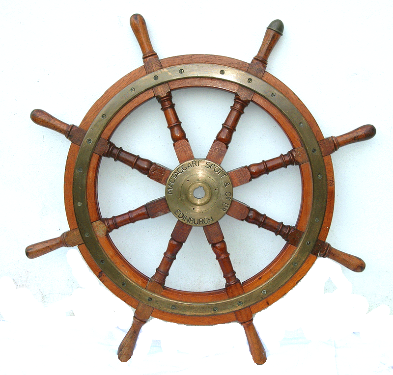
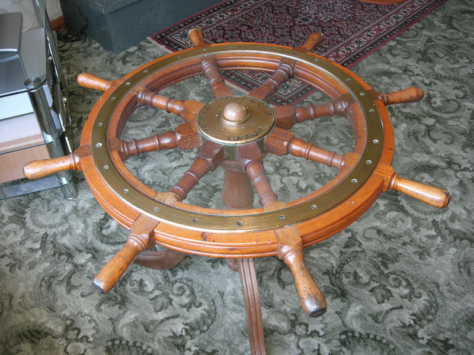

In August 2006 a visitor to my web site revealed that he had a ship's wheel reputed to have belonged to HMS Theseus. It had been left to him by his late father who served in the Royal Navy and was Commanding Officer of HMS Sultan, an Engineering Naval Establishment at Portsmouth. Apparently, during refurbishment at the Station, the wheel was about to be scrapped and thrown into a skip, so it was salvaged, legs were fitted, and made into a coffee table.
The wheel manufactured by MacTaggart Scott & Co Ltd had a reference number stamped on it. Enquiries were made to the manufacturers and their archives searched to reveal that :-
